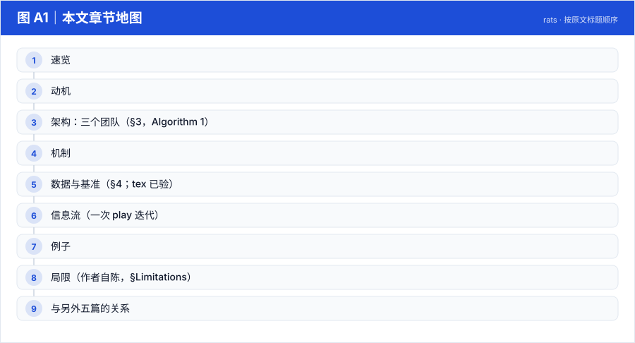
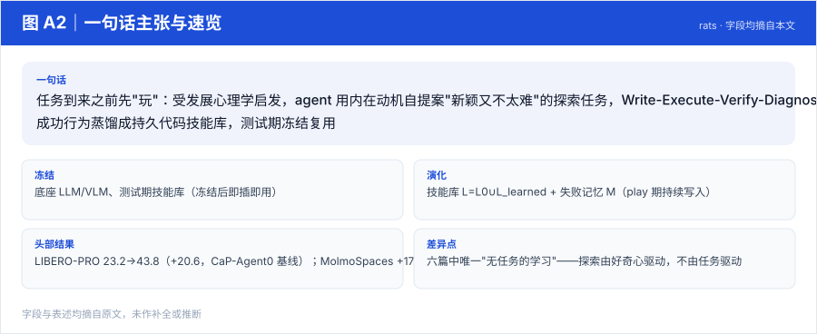
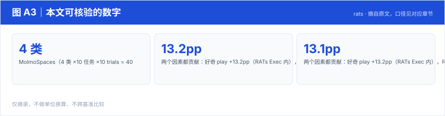
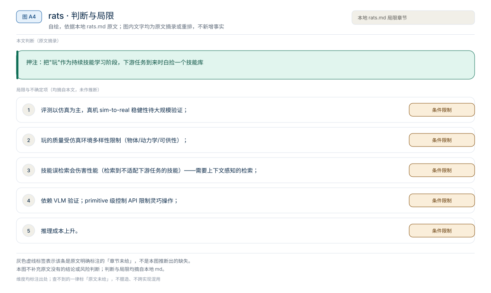

【Harness VLA · 代码即策略与技能发现】RAX 深读：把在线探索做成 Scaling Law，五大基准平均领先 37.4 个点
冻结通用 coding agent 直接连机器人感知/控制接口，把"在线探索"做成 scaling law：成功决策编译成程序、版本化入库，能力随探索预算单调增长
Harness01-代码即策略与技能发现2026
任务到来之前先"玩"：受发展心理学启发，agent 用内在动机自提案"新颖又不太难"的探索任务，Write-Execute-Verify-Diagnose 团队练习并把成功行为蒸馏成持久代码技能库，测试期冻结复用
原题与资源：RATs: Playful Agentic Robot Learning · arXiv:2606.19419
一句话：任务到来之前先"玩"：受发展心理学启发，agent 用内在动机自提案"新颖又不太难"的探索任务，Write-Execute-Verify-Diagnose 团队练习并把成功行为蒸馏成持久代码技能库，测试期冻结复用
阅读成本：正文约 3349 字 / 9 个章节 / 4 张图；目录按本文原有章节顺序排列，章节内容未改动。
目录（点击跳到对应章节）：

图 A1：本文章节地图（节点即原文 h2 标题）。自绘，依据本文，不新增事实。
| 项 | 内容 |
|---|---|
| 一句话 | 任务到来之前先"玩"：受发展心理学启发，agent 用内在动机自提案"新颖又不太难"的探索任务，Write-Execute-Verify-Diagnose 团队练习并把成功行为蒸馏成持久代码技能库，测试期冻结复用 |
| 冻结 | 底座 LLM/VLM、测试期技能库（冻结后即插即用） |
| 演化 | 技能库 L=L0∪L_learned + 失败记忆 M（play 期持续写入） |
| 头部结果 | LIBERO-PRO 23.2→43.8（+20.6，CaP-Agent0 基线）；MolmoSpaces +17.0；技能即插回 CaP-Agent0 跨环境 +8.9 / 真机 +8.8 |
| 差异点 | 六篇中唯一"无任务的学习"——探索由好奇心驱动，不由任务驱动 |

图 A2：一句话主张与速览字段。自绘，依据本文，不新增事实。

图 A3：本文可核验的数字摘录。自绘，依据本文，不新增事实。
一个具体任务走一遍 · 本文可核验数字与字段速查（以下均摘自原文，未作推算）：
| 团队 | 组成 | 职责 |
|---|---|---|
| Task Proposer | 提案 LLM + Environment Creator | 从场景+技能库+失败记忆生成候选任务池，按 Goldilocks 原则选任务 |
| Execution | Planning Agent → Policy Writer →（SubAgent）；验证五件套 | 写码执行；Planner Verifier（计划是否物理落地）/ Quality Checker（代码安全）/ Goal Verifier（终局）/ Per-Step Verifier（步级）/ Failure Diagnoser（失败模式+修正建议） |
| Memory-Management | Memory Curator + Skill Proposer | 每 K=5 次迭代合并去重技能、删冗余教训；从重复失败中起草辅助函数 |
Goldilocks 任务选择（§3.2，公式 tex 已验）：τ_t = argmax [ N(τ)·F(τ) ]
N(τ) = (1/|O×S|) Σ 1/√(N(o,s)+1)——偏向罕见"物体×技能"组合；F(τ) = 4·r̄·(1−r̄)——峰值在 r̄≈0.5 的"半熟区"，排除 trivial（r̄→1）与不可能（r̄→0）。技能生命周期：成功 → 提取自包含函数 + docstring → 入库为 experimental；反复成功 → verified（检索优先）；反复失败 → deprecated（对规划隐藏）。失败回合蒸馏成简短 lesson（缺失前置条件/修正建议）存 M。
测试期纪律：Task Proposer 与 Memory Curator 全部禁用，只检索；两种用法——RATs 全队执行，或把冻结库直接插进标准 CaP-Agent0（证明技能本身的独立价值）。
| 评测 | RATs | 基线 | 增益 |
|---|---|---|---|
| LIBERO-PRO（60 held-out 任务 ×10 init = 600 trials） | 43.8 | CaP-Agent0 23.2；最佳 VLA π0.5 仅 12.8 | +20.6 |
| MolmoSpaces（4 类 ×10 任务 ×10 trials = 400） | 38.0 | 21.0 | +17.0 |
| RoboSuite 跨环境即插（LIBERO-PRO 玩的技能 → CaP-Agent0） | 49.1 | 40.3 | +8.9；two-arm lifting +24.0（跨本体迁移） |
| 真机（2 任务 ×40 trials） | 38.8 | 30.0 | +8.8 |
消融（§4.4）：随机玩 50 轮只 +1.5（23.2→24.7），Curious Play +9.1（→32.3）——好奇心是玩的有效性的关键；只改执行系统 36.3，只改玩 32.3，两者叠加最优 44.3（RATs Exec，5 trials/任务口径）——玩与测试时执行互补。
LIBERO-PRO in-domain（平均，%）
| OpenVLA | π0 | π0.5 | CaP-Agent0 | RATs |
|---|---|---|---|---|
| 0.0 | 0.0 | 12.8 | 23.2 | 43.8 |
（分套件：Object 61/63、Goal 43/36、Spatial 29/31，Pos./Task 两列）
MolmoSpaces in-domain（平均，%）： CaP-Agent0 21.0 → RATs 38.0（Close 36→73 最显著）。
| 测试系统 | Play 策略 | LIBERO-PRO Avg |
|---|---|---|
| CaP-Agent0 | No Play | 23.2 |
| CaP-Agent0 | Random Play | 24.7 |
| CaP-Agent0 | Curious Play | 32.3 |
| RATs Exec. | No Play | 36.3 |
| RATs Exec. | Random Play | 38.3 |
| RATs Exec. | Curious Play | 44.3 |
场景观测 + 技能库 + 失败记忆
→ Proposer 生成候选池 → Goldilocks 选 τ_t（N·F 最大化）
→ Planner 出计划（标注可复用技能）→ Planner Verifier 检查
→ Policy Writer 写码 → 执行 → Goal/Per-Step Verifier 判定
→ 失败：Failure Diagnoser 反馈 → 重试（预算内）或 SubAgent 单练子动作
→ 成功：提取函数入 L（experimental）；失败：lesson 入 M
→ 每 5 轮：Curator 去重合并；Skill Proposer 起草辅助函数LIBERO-PRO 的 Object 扰动（指令指向训练里没见过的物体）：play 期 agent 自玩过"抓各种非常见物体"，攒下 verified 的抓取辅助函数与前置条件检查 → 测试期 Planner 检索到这些技能，Object split 拿 61.0/63.0（对比 π0.5 全场 12.8）。
本文判断：押注：把"玩"作为持续技能学习阶段，下游任务到来时白捡一个技能库
局限与不确定项（以下均摘自本文，未作推断）：

图 A4：局限与不确定项摘录。自绘，依据本文，不新增事实。
覆盖范围：本页新增的导读、目录、章节地图、数字卡与局限清单，均为原文信息的重排或摘录；正文、数据与实验结论未改动。